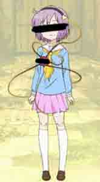
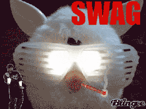
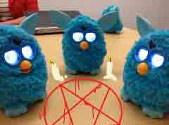

REBUILD OF BLINDCON: YOU CAN (NOT) SEE
the time has come to fite against the see-ers once again at blindcon 2014!!!
4 the past 3 years sakuarcon has been the gathering place of SEE-RS who want to destory the human rayce!
the see-ers are susppected to be the cause of the coming thrid impacto!!!
i hav fuond the reason behnd blindcoms location. it is a PORTAL to GENSOKYUO
at blindcon 2014 i will open a portal to gansokyo so we can be free from this diaster!!
plaes meet me in SETTLE at SkAKURACON2014!!!
proff taht the moon is FAKE
secerts of the timecube!
find me at blindcon 2014 to free ur soul from the see-ers
i will be copslyaing thees character from japnaese anime
one is a see-r but donuyt b fooled!

i hav requested back up from FURBIES do not fear these kind souls. they feed off feer so donut do this!!
Copyleft (C) 2015 hat
This program is free software; you can redistribute it and/or
modify it under the terms of the GNU General Public License
as published by the Free Software Foundation; either version 2
of the License, or (at your option) any later version.
This program is distributed in the hope that it will be useful,
but WITHOUT ANY WARRANTY; without even the implied warranty of
MERCHANTABILITY or FITNESS FOR A PARTICULAR PURPOSE. See the
GNU General Public License for more details.
You should have received a copy of the GNU General Public License
along with this program; if not, write to the Free Software
Foundation, Inc., 51 Franklin Street, Fifth Floor, Boston, MA 02110-1301, USA.